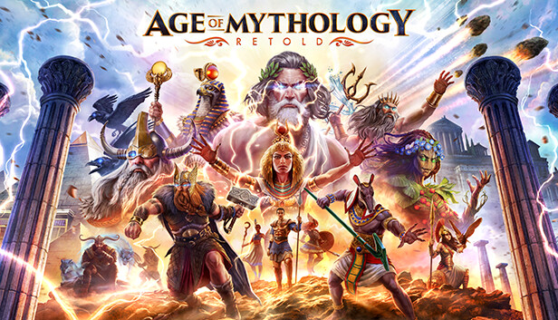
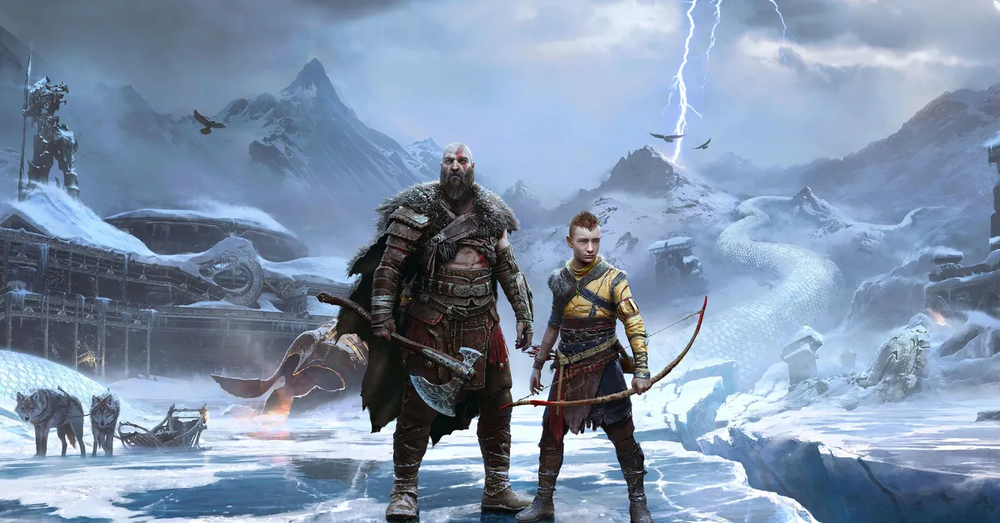
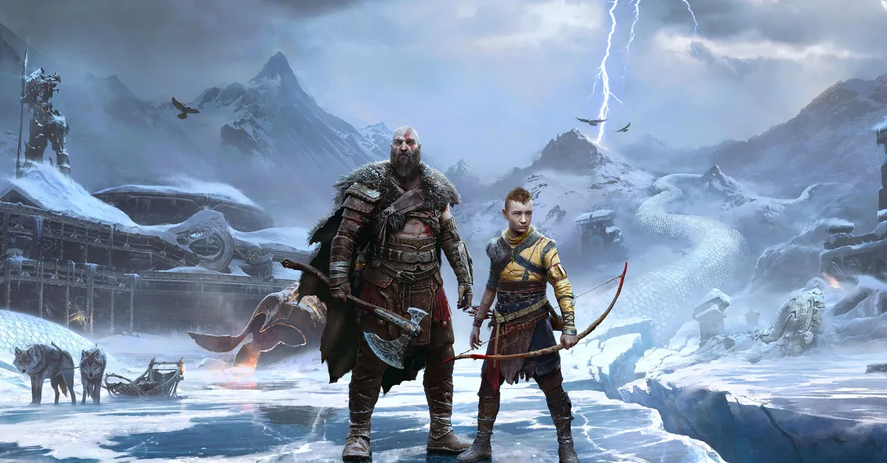

Noticias
1. Harry potter: campeones de quidditch
Estreno: 3 de septiembre del 2024
Pc, Ps5, Xbox series X|S
Basado en el mágico deporte de Hogwarts. Sumérgete en el encantador mundo del Quidditch jugando solo o compartiendo la
magia con amigos y familiares. Surca los cielos en uno de los puestos tradicionales del juego: cazador, buscador,
guardián o golpeador, cada uno con su estilo único de juego. Vuela en campos de quidditch legendarios, así como en mapas
que muestran zonas nunca vistas del mundo mágico.

2. Age of Mythology: Retold
Estreno: 4 de septiembre del 2024
Pc, Xbox series X|S
Una remasterización del título clásico con gráficos, sonido y otras características actualizadas. Protege tus dominios,
lidera monstruos legendarios e invoca el poder de los dioses para acabar con tus enemigos.
 3. Astro Bot
Estreno: 6 de septiembre del 2024
PS5
En este nuevo juego, explorarás 6 galaxias y más de 80 niveles en busca de la desperdigada tripulación de Astro.
¡Agárrate fuerte a tu Dual Speeder y sumérgete en cada planeta único, desde frondosos bosques, playas arenosas y
volcanes ardientes hasta lugares más sorprendentes como un reloj de arena gigante o la copa de un arbol cantarín!
3. Astro Bot
Estreno: 6 de septiembre del 2024
PS5
En este nuevo juego, explorarás 6 galaxias y más de 80 niveles en busca de la desperdigada tripulación de Astro.
¡Agárrate fuerte a tu Dual Speeder y sumérgete en cada planeta único, desde frondosos bosques, playas arenosas y
volcanes ardientes hasta lugares más sorprendentes como un reloj de arena gigante o la copa de un arbol cantarín!
 4. Warhammer 40.00: Space Marine 2
Estreno: 9 de septiembre del 2024
Pc, Ps5, Xbox series X|S
Warhammer 40.000: Space Marine 2 es una aventura de acción a cargo de Saber Interactive y Focus Home Interactive para
PC, PlayStation 5 y Xbox Series en la que debemos eliminar a las hordas de Tiránidos en la piel de un poderoso Marine
Espacial. La humanidad corre peligro. El Imperio te necesita. Conviértete en un Marine Espacial de destrezas
sobrehumanas, los mejores guerreros del Emperador, y acaba con las implacables hordas enemigas con tus capacidades
mortíferas y un arsenal devastador.

5. God of war: Ragnarok
Estreno: 19 de septiembre del 2024
Pc
El ragnarok aterriza en Steam que sigue con las aventuras de Kratos tras su anterior entrega. Juntos, Kratos y Atreus se adentran en los nueve reinos
en busca de respuestas mientras las fuerzas de Asgard se preparan para la guerra. A lo largo de su aventura, explorarán
paisajes mitológicos increíbles, reunirán aliados de los nueve reinos y se enfrentarán a imponentes enemigos con aspecto
de monstruos y dioses nórdicos.
4. Warhammer 40.00: Space Marine 2
Estreno: 9 de septiembre del 2024
Pc, Ps5, Xbox series X|S
Warhammer 40.000: Space Marine 2 es una aventura de acción a cargo de Saber Interactive y Focus Home Interactive para
PC, PlayStation 5 y Xbox Series en la que debemos eliminar a las hordas de Tiránidos en la piel de un poderoso Marine
Espacial. La humanidad corre peligro. El Imperio te necesita. Conviértete en un Marine Espacial de destrezas
sobrehumanas, los mejores guerreros del Emperador, y acaba con las implacables hordas enemigas con tus capacidades
mortíferas y un arsenal devastador.

5. God of war: Ragnarok
Estreno: 19 de septiembre del 2024
Pc
El ragnarok aterriza en Steam que sigue con las aventuras de Kratos tras su anterior entrega. Juntos, Kratos y Atreus se adentran en los nueve reinos
en busca de respuestas mientras las fuerzas de Asgard se preparan para la guerra. A lo largo de su aventura, explorarán
paisajes mitológicos increíbles, reunirán aliados de los nueve reinos y se enfrentarán a imponentes enemigos con aspecto
de monstruos y dioses nórdicos.